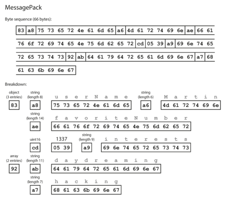
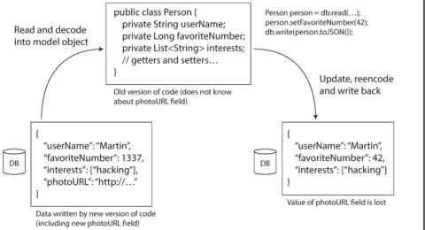
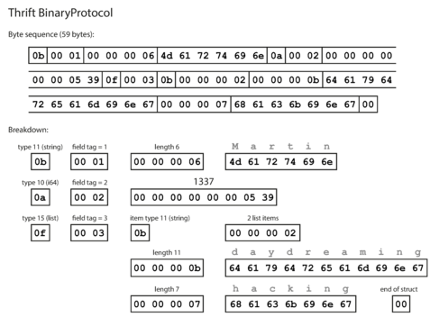
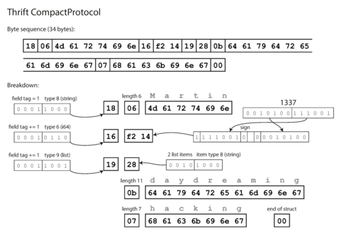
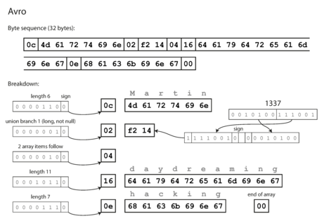
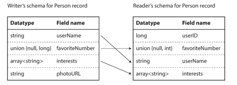
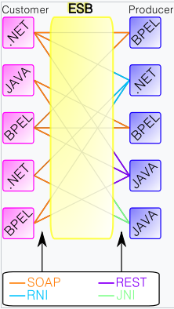

資料在做儲存或輸出的時候是需要編碼（encoding）的，除了可以幫助壓縮資料量，好的編碼方式會在綱目（Schema）調整後，仍能做編（解）碼，也就是綱目演變（schema evolution）後，仍能保持前後相容。
當你把資料存進記憶體中，可以透過各種資料型別去對資料進行操作，例如陣列、物件等等。然而當把資料存進磁碟（filesystem）中或者透過網路傳送給其他服務時，就需要以編碼後的資料（例如 JSON 格式）來儲存或輸出。
程式碼內建編碼方式
我們都會透過程式語言來和記憶體溝通，不同程式語言預設就有些編碼方式，Java：java.io.Serializable、Ruby：Marshal、Python：pickle，然而
- 通常不同語言之間是無法互相接通的
- 可能會觸發物件的建置，有安全性疑慮
- 較少考慮前後相容
- 效率通常很差
方便人類閱讀的格式
JSON、XML、CSV，這些格式都很常見，不需要綱目就能解碼。然而
- 無法儲存二進位文字，雖然可以使用 Base64 把二進位轉換成 Unicode 文字，缺需要額外的效能和體積
- Base64 每 6 個 bit 轉成一個 ASCII 字元（1 個 byte），所以體積會比直接做二進位轉換大 1.3 倍
- 沒有綱目，花時間理解和管理
- 大數字不好儲存，整數、小數的區分
然而這些仍是主要的編碼方式，也因為大家很習慣這些方式的編碼，導致更有效和更方便管理的編碼方式很難吸引到大家的目光。
二進位 JSON
有些格式是以 JSON 為基礎做演化的，其嘗試解決上述問題，但是效率仍無法贏過專門的二進位編碼，以下圖為範例：
原始 JSON 資料：
{
"userName": "Martin",
"favoriteNumber": 1337,
"interests": ["daydreaming", "hacking"]
}

我們可以得到 66 Bytes 的資料，確實比原本 88 Bytes 好，但是和待會我們可以看到減少到 32 Bytes 的方式仍有差異。
二進位編碼
二進位編碼並不是新東西，早在 1984 年就有協定 ASN.1 闡述如何進行二進位編碼，他和 Thrift、Protocol Buffer 一樣都使用 tag ID。且其應用（DER）如今仍被大量使用於 X.509。
但是他卻有過於複雜且綱目（Schema）建置困難的缺點，由此發展出以下幾個較新的方式。
- Apache Thrift - 初始於 Facebook
- Protocol Buffer - Google
- Apache Avro
上述方式可以降低磁碟的使用量、高效能編（解）碼、有效製作文件檔，但缺點就是需要解碼才能讓人類讀懂訊息。
前後相容
在做編碼時都需要去考慮前後相容：
- 向後相容：舊的程式碼讀到的資料含有新的綱目定義的欄位時，仍然可以運行
- 向前相容：新的程式碼讀到的資料含有已經被刪除的欄位時，仍然可以運行
由此可知，JSON 這類編碼方式新舊版本都可以做解碼，只要在程式邏輯上注意一下就可以保持前後相容。
除此之外還需要注意新的程式碼撰寫資料時，被同時存在的舊程式碼覆蓋掉：

在資料準備要送到資料儲倉（warehouse）時，也需要編碼，這時候可以把資料轉換成友善於列式資料庫（column-oriented database）的格式，例如 Parquet。
Thrift
綱目：
struct Person {
1: required string userName,
2: optional i64 favoriteNumber,
3: optional list<string> interests
}
BinaryProtocol
59 Bytes

CompactProtocol
34 Bytes

Protocol Buffer
綱目：
message Person {
required string user_name = 1;
optional int64 favorite_number = 2;
repeated string interests = 3;
}
33 Bytes

註
required和optional在編碼時，不影響結果，僅會在做解碼時 runtime 輸出錯誤。- 每個 tag ID 不去更動來保持前後相容。當使用舊的綱目去讀取未知欄位時，省略之。
- 新增欄位時若設定
required會讓舊程式碼輸出錯誤，需要給定預設值。 - 變更檔案格式可能導致資料不完全，例如
int8轉到int16 - ProtocolBuffers 沒有
list資料型態，讓他很好從repeated轉到optional，但巢狀結構就會需要額外功來達成。
Avro
綱目：
record Person {
string userName;
union { null, long } favoriteNumber = null;
array<string> interests;
}
這裡多了一個 union，到時候在 encoding 時需要設定以說明該值屬於哪種型別。
32 Bytes

比較
Avro 並沒有使用 tag ID 來辨認每個資料的位置，而是透過綱目不同版本間的轉換：

因此讀取資料時，需要先確保撰寫資料所使用的綱目版本。
Avro 也利用 union { null, int } 來當作資料的 required/optional，同時給予預設值來滿足向後（前）相容。
除此之外，Avro 還允許更改資料的型別和名稱，但只能滿足向後相容：
- 提供型別的轉換器
- 設定
alias來滿足名稱的轉換
如何知道撰寫者的綱目版本
根據應用程式而有差異：
- 若資料庫是在 Hadoop 架構之上，就可以在每份檔案前面添加綱目版本。
- 若資料庫的每筆資料都可能會有不同的版本，就需要在每筆資料前設定版本，如 Espresso。
- 若是在網路上進行雙向溝通的應用程式，可以協商出彼此的版本，如 Avro RPC
不需要使用 tag ID 有什麼好處
資料輸出成檔案時（Hadoop 架構下的資料庫常做的事），我可以很方便地從資料庫的綱目轉換成 Avro Schema，然後把檔案撰寫成二位元。同樣的，當資料庫的綱目更新時，已經輸出過的檔案就不再需要轉換，而是透過上述版本轉換機制。
相反的，用 Protocol Buffers 或 Thrift 就需要謹慎使用 tag ID 來避免任何衝突。
Protocol Buffers、Thrift 並不是為了這類操作而設計的編碼格式
弱型別語言上的應用
Protocol Buffers、Thrift 在強型別的語言（Java、C++、Dart）上很好用，因爲可以透過綱目去產生編碼後的程式碼，並執行二位元編碼的解碼。但是在弱型別的語言（JavaScript、Python、Ruby、PHP）上就需要做額外的功，如 TypeScript。除此之外，動態產生的綱目，如透過資料庫的綱目產生 Avro Schema，對於弱型別的語言就更麻煩。
Avro 提供一些手段減少這類困擾，例如在 Hadoop 架構之上的檔案，都包含綱目，也就是讓這份檔案能夠自描述（self-describing）。你可以直接透過程式庫打開這份檔案，並且操作上如同 JSON 格式的資料。
分析工具 Apache Pig 就是運用這特性，讓使用者直接透過 SQL 語法在 Hadoop 架構之上的資料庫進行分析，而不需要考慮任何綱目上的問題。
複習差異
JSON（Schema-less 編碼）可以透過文件方式補足綱目，有其優點：
- 在解碼時不會受綱目影響，可輕易允許向後（前）的相容。
- 綱目因為是文件形式，能詳細限制資料。如：數字只能在 0~1 之間。
然而二進位編碼也有其好處：
- 儲存更緊密，體積小。
- 因為綱目（Schema）是必須的，不會出現文件和實際運作有落差（忘記補文件）。
- 在 compile 過程就能檢查程式碼是否符合綱目。
- 透過一些機制仍能保持向前（後）的相容
編（解）碼的使用情境
- 資料庫同一個服務編（解）碼。也就是：
- 資料庫編、解碼，或者
- 資料庫需求者編、解碼
- RPC/REST/SOAP APIs，兩個服務或使用者彼此編解碼。也就是：
- 請求者把請求資訊編碼
- 服務者解碼
- 服務者把回應編碼
- 請求者解碼
- RPC 的編碼使用
- 在發送者和接收者間非同步訊息傳遞（Asynchronous message passing）。也就是：
- 發送者編碼
- 接收者解碼
非同步訊息傳遞
這塊較不熟悉，因此另外搜集資料。非同步訊息和同步訊息的差異在於
- 同步訊息預期收到請求，例如 REST API。這代表當沒收到請求時，需要做錯誤處理（Error handling）
- 非同步訊息則相反，送出訊息後，在確認對方收到前（根據設定可能不需要確認）可能又再送出一則訊息
非同步訊息傳遞書中主要介紹兩種方式：
- 消息代理（Message brokers）

- 演員模型（Actor model）
除此之外，另外可能還有：
- 事件流式架構（Event streaming platforms）
- 僅提供多對一（pub/sub）的服務
- 較適合處理大量訊息

事件架構對於資料傳遞和整個組織的資料整合來說非常好用，未來會補個說明
- 企業服務匯流排（Enterprise service bus）
- 較大型的消息代理者，處理多對多的溝通，會負責把傳遞中的訊息格式統一。例如 XML 轉成 JSON
- 慢慢式微，因為會越搞越複雜

演員模型（Actor model）
演員模型是一種程式設計的哲學，其主旨是獨立每個運行的邏輯和其狀態，並把這獨立的單位稱為演員（Actor）。
例如現在有個演員會負責輸出「Hello World」，我們傳遞一個訊息給這個演員，告訴他我這裡有個變數 3，作出任何你應該要做的事情吧。 然後這個演員就會開始輸出「Hello World」三次。
以 Java 的套件 Akka 為例，該套件是以演員模型為核心思想去實踐一個框架的：
public class HelloWorld extends AbstractBehavior<HelloWorld.Command> {
interface Command {}
public enum SayHello implements Command {
INSTANCE
}
public static class ChangeMessage implements Command {
public final String newMessage;
public ChangeMessage(String newMessage) {
this.newMessage = newMessage;
}
}
public static Behavior<Command> create() {
return Behavior.setup(context -> new HelloWorld(context));
}
private String message = "Hello World";
private HelloWorld(ActorContext<Command> context) {
super(context);
}
@Override
public Receive<Command> createReceive() {
return newReceiveBuilder()
.onMessageEquals(SayHello.INSTANCE, this::onSayHello)
.onMessage(ChangeMessage.class,this::onMessageChange)
.build();
}
private Behavior<Command> onSayHello() {
System.out.println(message);
return this;
}
private Behavior<Command> onMessageChange(ChangeMessage command) {
message = command.newMessage;
return this;
}
}
上述演員在收到 SayHello.INSTANCE 就會執行 onSayHello，收到 ChangeMessage 這一類別的訊息時會執行 onMessageChange。
準備好演員，就可以開始執行劇場工作囉：
ActorSystem<HelloWorld.Command> mySystem = ActorSystem.create(HelloWorld.create(), "MySystem");
// 告訴演員 `HelloWorld.SayHello.INSTANCE` 這則訊息
mySystem.tell(HelloWorld.SayHello.INSTANCE);
mySystem.tell(HelloWorld.SayHello.INSTANCE);
// 告訴演員 `HelloWorld.ChangeMessage` 這個型別的訊息
mySystem.tell(new HelloWorld.ChangeMessage("Hello Actor World!!"));
mySystem.tell(HelloWorld.SayHello.INSTANCE);
mySystem.tell(HelloWorld.SayHello.INSTANCE);
// 最後輸出：
// Hello World
// Hello World
// Hello Actor World!!
// Hello Actor World!!
演員模型的價值在於它不只局限於程式碼之間的訊息傳遞，你一樣可以通過網際網路的方式傳遞，就好像 API 一樣（類似 RPC 想做的事）。